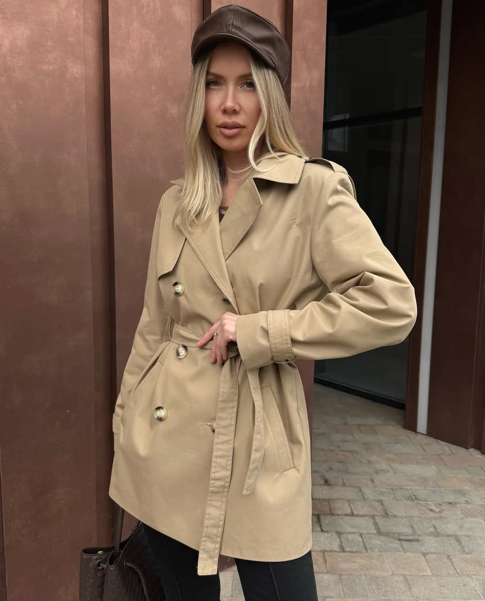

MASY
Вариант 1
Ателье
Самый близкий к 12 STOREEZ: белый, крем и кофе, мягкая антиква, спокойный двойной разворот на первом экране.
На заказ: две сноски и гид-силуэт
Сначала выбор: из наличия или индивидуально. Затем фигура, на которой линия показывает, где держать ленту для каждой мерки.